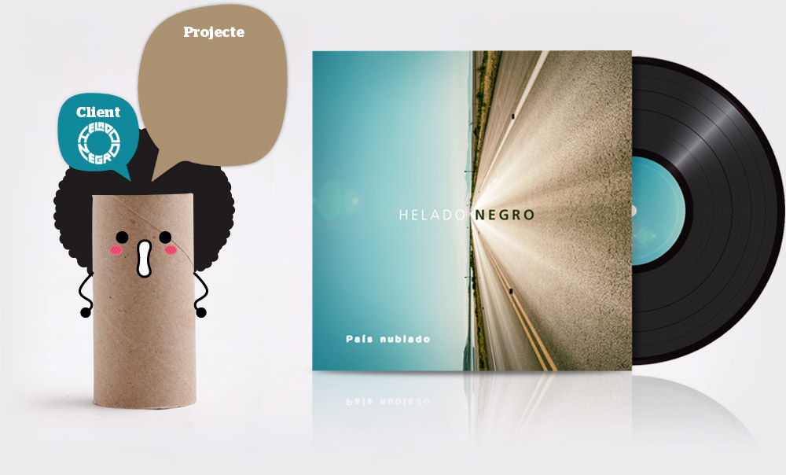
Portada pel single "País Nublado". Qui, sino Helado Negro, podría utilitzar la foto d'un dia radiant para il·lustrar la portada d'un single que porta per nom "País Nublado"?
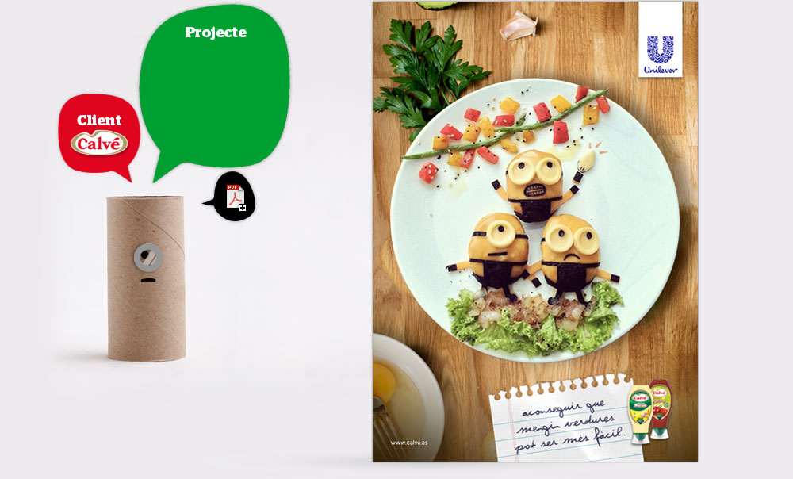
Anunci de premsa
El nostre target eren les mares. I tothom sap que una mare faría qualsevol cosa pel seu fill. Però també els agrada tenir... temps lliure.
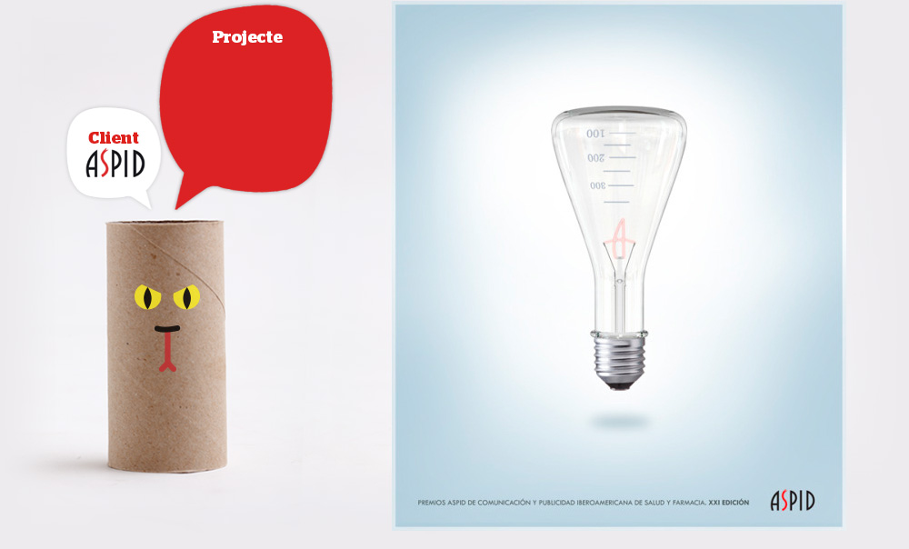
Poster
Cada any els Premis de Publicitat Iberoamericana de Salud i Farmàcia convoquen un concurs per escollir la que serà la seva imatge oficial. I amb aquesta proposta vaig guanyar l'edició de 2016/2017.
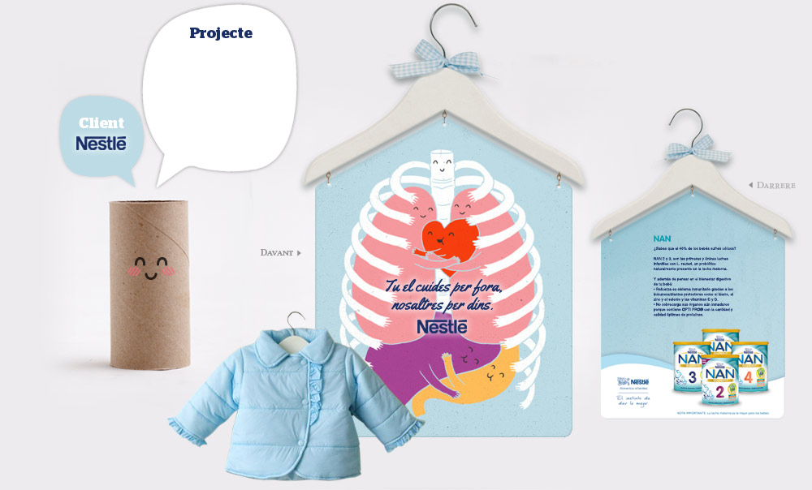
Anunci de supermercat
El brief era "Anunciar Nan dins de supermercats". I la idea s'explica per si mateixa; sorprendre les mares quan compressin roba pels seus fills. De moment s'ha quedat en un simple esboç.
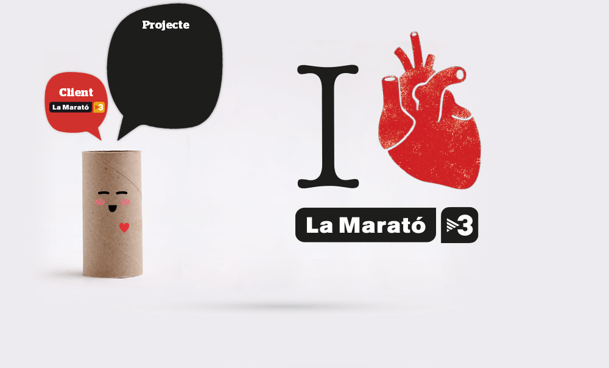
Key Visual / Logo
"I love La Marató", Key visual per La Marató de TV3. Aquest any dedicat a les malaltíes del cor. Amb Boris Puyana com a dupla i Manu Cárdenas com a director creatiu.
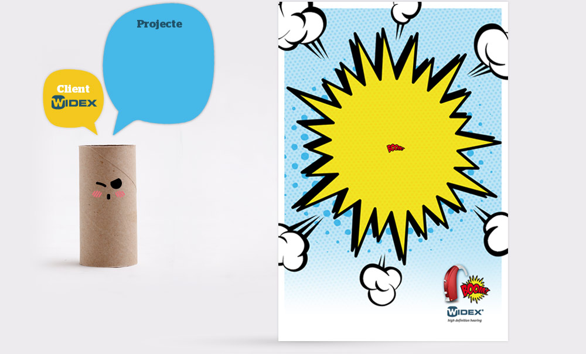
Anunci Prensa
Widex és un fabrincant d'audífons. Aquesta peça era per anunciar una colorida col·lecció de sonotones pensada per adolescents.
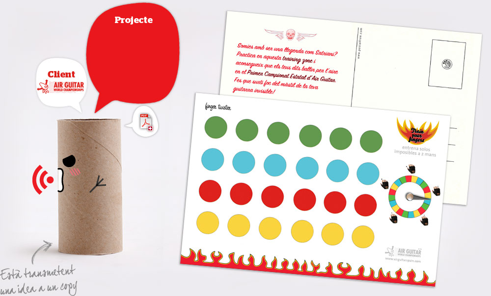
Postalfree
Campanya que consta de tres postalfree interactives (veure PDF adjunt) pensades a mode de zones d'entrenament per prepararse per participar al proper campionat estatal d'Air Guitar.
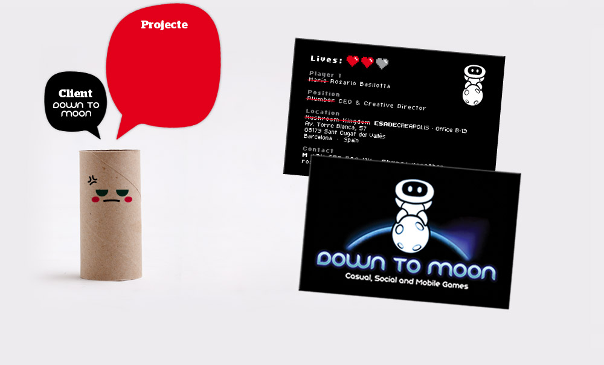
Targetes de visita
Ok! Prou de jugar! Què succeeix quan el propietari d'una empresa de videojocs es posa a treballar? Doncs aquestes targetes! També hi havia versions de la Lara i en Guybrush.
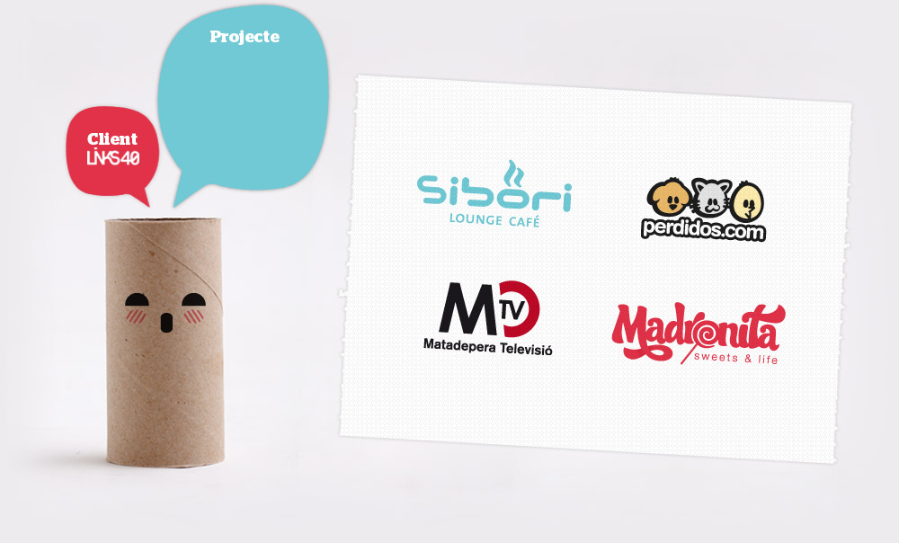
Logotips
Alguns dels logotips que vaig fer a Links40, empresa on vaig crèixer com a profesional.
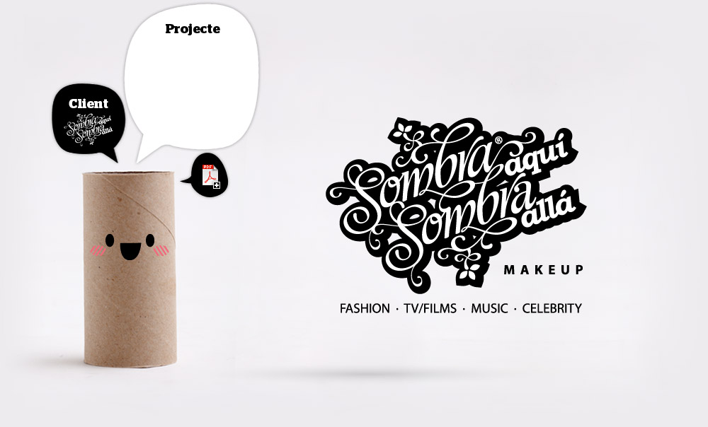
Naming · Logo · Papereria
Aquí la clienta era una maquilladora i dissenyadora de moda de Mac. Em va donar carta blanca per fer el que volgués.
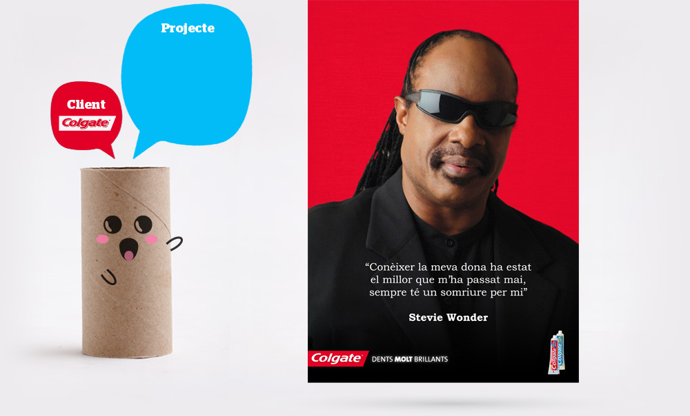
Anunci de prensa
Campanya per comunicar l'efecte blanquejador del nou Colgate Max White! Constava de 2 follow ups més, protagonitzats per José Feliciano i Ray Charles.
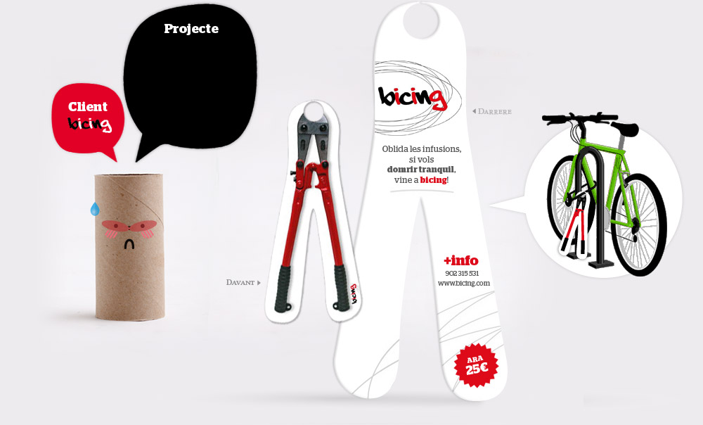
Ambient marketing
Display de cartró per anunciar el servei de préstec de bicicletes de l’Ajuntament de Barcelona. En aquesta acció es posaven cisalles als candaus de bicicletes aparcades al carrer.
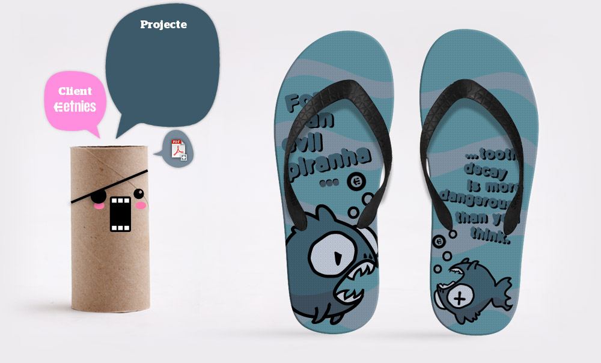
Disseny de xancletes
Tres propostes diferents (veure PDF) per El-Jefe Sandal Design Contest. En els copys es pot llegir "Per una malvada piranya... la càries és més perillosa del que sembla".
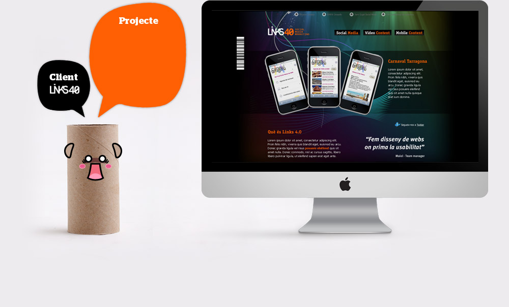
Website
Web feta formant part de Links40, quan n'era l'encarregat del departament de disseny.
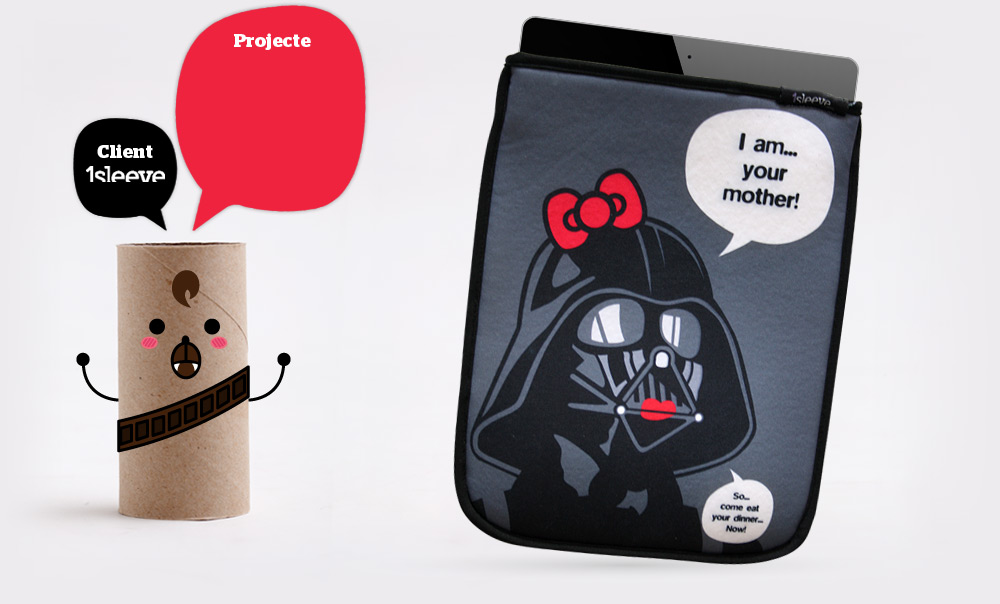
Funda per iPad
1Sleeve és una empresa catalana que es dedica a la venta de fundes personalitzades per iPad. Volien una idea/disseny per la primera fornada de fundes i... va sortir això.